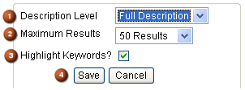

其它搜索选项
(译者注：由于 NX 8帮助库的界面发生了较大的变化，因此本文中描述的选项在NX 8帮助库中无法匹配，所以不作翻译，有兴趣的可以点击 NX 8帮助库中搜索框右侧三角箭头，以查看搜索技巧。）
Click the Options link next to the green arrow to open a new window with additional search options.


Description Level (1) can be set to either Title Only or Full Description. This modifies whether the word being searched on is present in the title of the page or elsewhere in the full contents of the page.
Maximum Results (2) allows you to control the number of results displayed on the page.
If Highlight Keywords (3) is selected, every occurrence of the keyword will be highlighted in the documentation area.
After making changes to your search options, you can click Save (4) to save your settings for future searches.